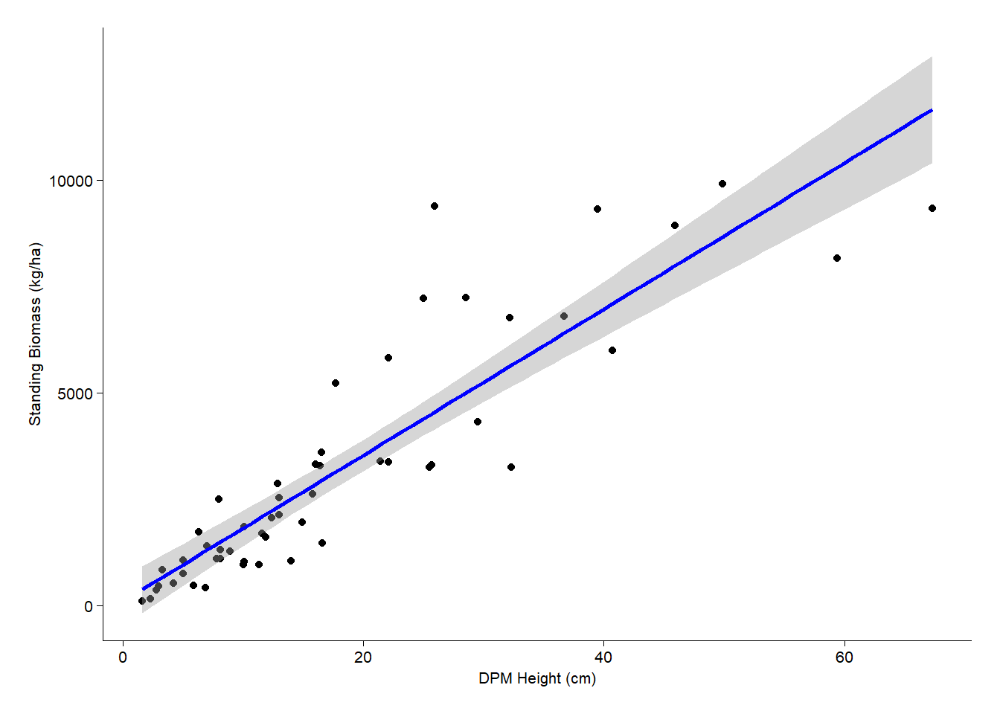
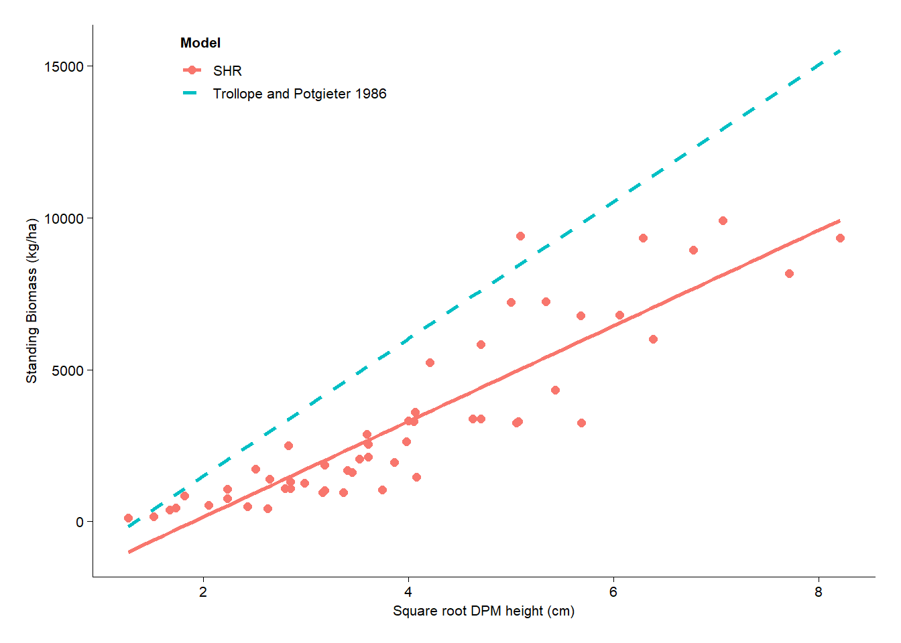

Code
library(tidyverse)
library(lmerTest)
library(ggplot2)
library(dplyr)
library(Matrix)
library(lme4)
library(emmeans)
library(here) ## MOST IMPORTANT NOT TO FORGET THIS ONE
library(robustbase)
library(sjPlot)
theme_beautiful <- function() {
theme_bw() +
theme(
text = element_text(family = "Helvetica"),
axis.text = element_text(size = 8, color = "black"),
axis.title = element_text(size = 8, color = "black"),
axis.line.x = element_line(size = 0.3, color = "black"),
axis.line.y = element_line(size = 0.3, color = "black"),
axis.ticks = element_line(size = 0.3, color = "black"),
panel.border = element_blank(),
panel.grid.major.x = element_blank(),
panel.grid.minor.x = element_blank(),
panel.grid.minor.y = element_blank(),
panel.grid.major.y = element_blank(),
plot.margin = unit(c(0.5, 0.5, 0.5, 0.5), units = , "cm"),
plot.title = element_text(
size = 8,
vjust = 1,
hjust = 0.5,
color = "black"
),
legend.text = element_text(size = 8, color = "black"),
legend.title = element_text(size = 8, color = "black"),
legend.position = c(0.9, 0.9),
legend.key.size = unit(0.9, "line"),
legend.background = element_rect(
color = "black",
fill = "transparent",
size = 2,
linetype = "blank"
)
)
}
WGdata <- read_csv(here("DATA/DPM.csv"))
################## DPM HEIGHT ~ OVEN DRIED WEIGHT. NO SQUARE ROOT
# 2. Convert weight from grams to kg/ha
# Area of 34cm diameter disc = π * (0.17 m)^2 = 0.0908 m²
frame_area <- pi * (0.17^2) # = 0.0908 m²
WGdata$Biomass_kg_ha <- WGdata$Weight * 10 / frame_area
# 3. Linear regression: Biomass ~ DPH
modelWG <- lm(Biomass_kg_ha ~ DPH_Height, data = WGdata)
#summary(modelWG)
tab_model(modelWG)| Biomass_kg_ha | |||
| Predictors | Estimates | CI | p |
| (Intercept) | 107.06 | -471.50 – 685.62 | 0.712 |
| DPH Height | 171.69 | 146.97 – 196.40 | <0.001 |
| Observations | 53 | ||
| R2 / R2 adjusted | 0.792 / 0.788 | ||
Code
# Create scatter plot with regression line
ggplot(WGdata, aes(x = DPH_Height, y = Biomass_kg_ha)) +
geom_point() + # scatter plot
geom_smooth(method = "lm", se = TRUE, color = "blue") + # regression line
labs(
x = "DPM Height (cm)",
y = "Standing Biomass (kg/ha)") +
theme_beautiful()
Code
### USING THE TROLLOPE EQUATION TO COMPARE IT WITH MY MODEL
# Step 1: Prepare WGdata
WGdata$sqrtDPH_Height <- sqrt(WGdata$DPH_Height)
# Step 2: Create theoretical model predictions using the equation
WGdata$TR_model <- -3019 + 2260 * WGdata$sqrtDPH_Height
# Step 3: Theoretical model: y = -3019 + 2260 * sqrt(DP)
TR_model_data <- data.frame(
sqrtDPH_Height = WGdata$sqrtDPH_Height,
Biomass_kg_ha = -3019 + 2260 * WGdata$sqrtDPH_Height,
Source = "Trollope and Potgieter 1986")
# Step 4: Add source to WGdata
WG_actual_data <- data.frame(
sqrtDPH_Height = WGdata$sqrtDPH_Height,
Biomass_kg_ha = WGdata$Biomass_kg_ha,
Source = "SHR")
# Step 5: Combine both for plotting
combined <- rbind(WG_actual_data, TR_model_data)
# Step 6: Plot with legend
ggplot(combined, aes(x = sqrtDPH_Height, y = Biomass_kg_ha, color = Source)) +
geom_point(data = subset(combined, Source == "SHR"), size = 2) +
geom_smooth(data = subset(combined, Source == "SHR"),
method = "lm", se = FALSE) +
geom_line(data = subset(combined, Source == "Trollope and Potgieter 1986"),
linetype = "dashed", size = 1) +
labs(
x = "Square root DPM height (cm)",
y = "Standing Biomass (kg/ha)",
color = "Model"
) +
theme_beautiful() + theme(legend.position = "right") +
theme(
legend.position = c(0.1, 1),
legend.justification = c(0, 1),
legend.box.just = "left",
legend.title = element_text(face = "bold"),
legend.background = element_rect(fill = "white", color = "gray90"))